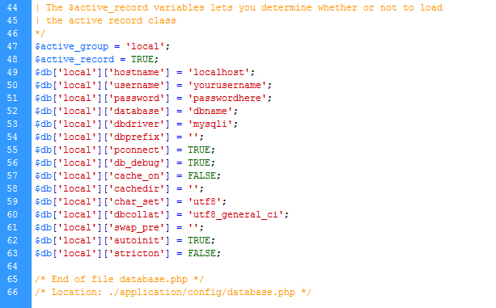
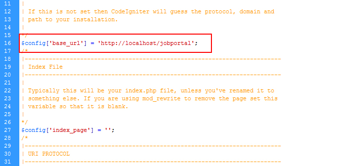
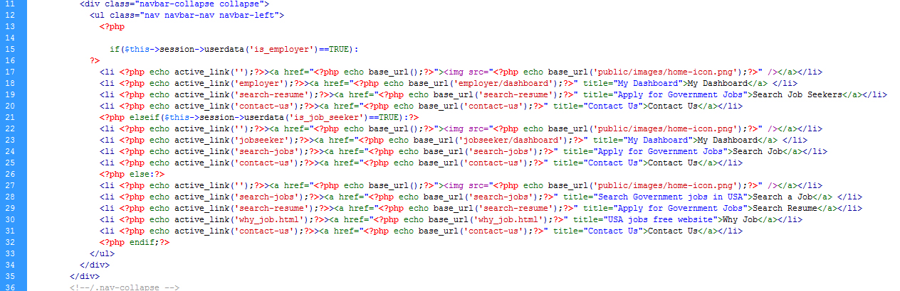
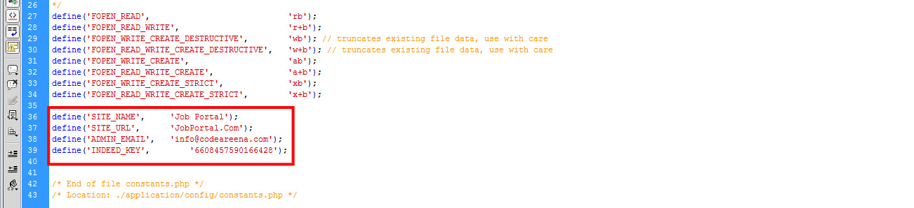

THANK YOU FOR PURCHASING JOB PORTAL!
Here are some basics on installing and configuring the Job Portal,
BEFORE WE GO
The code and the sample data is provided "as is". Customizing code and other design related issues can be done as freelance work on a $20-60 hourly rate only with Paypal and/or Skrill, if Job Portal available.
If you are new to Progamming, please understand I cannot fix your site for free. We would love to help everyone but there is no time. I suggest reading documentation available online regarding using PHP, server requirements, etc.
Thank you!
Job Portal Team
The Quickstart Package consists on a complete Codeigntier + Database Files + Template + Various Modules + Sample Content, excellent for beginner users to explore back-end settings and sample content. Installing the Quickstart is just like installing and configuring PHP!, but you will have the full demo of the job portal on your server. Once your environment is ready, follow this quick guide:
Go to the site folder (jobportal) and open the .htaccess file. Then update the RewriteBase accordingly (RewriteBase /jobportal/)
Go to jp_app/config folder, then open config.php file and update the $config['base_url'] with your current localhost or live site URL (http://localhost/jobportal)
Go to jp_app/config folder, then open database.php file and update the database connection string with your current localhost or live database connection string.
Open the file database_jobportal.sql in database folder of package files. Then create a new database in phpmyadmin. After that run this database_jobportal.sql file. It will create all required database tables and sample content.
Method 2Open the file database_jobportal.sql in editor. Then create a new database in phpmyadmin. After that copy databace from editor and run query in sql. It will create all required database tables and sample content.
Method 3Open the file database_jobportal.sql in database folder of package files. Then create a new database Connection in Navicat. After that run this database_jobportal.sql file. It will create all required database tables and sample content.
Change the administrator email address in "config/constants.php" file. (ADMIN_EMAIL)
Note: You need to use a valid domain email address.
Open your site main root folder then open: jobportalfolder/jp_app/config/database.php Change your db name, username and password here,

Open your site main root folder then open: jobportalfolder/jp_app/config/config.php Change your site url here

yourpath.com/admin
user: demo
pass: demo123456
Go to the site folder (jobportal) and open file jp_app\views\common\header.php. Here you can set logo, naviation and Account Buttons.
Administrator can manage whole website:
If you want to change indeed API key then Go to the site folder (jobportal) and open file jp_app\config\constants.php.
This system has been developed successfully incorporate all the requirements. Appropriate care has taken during database design maintain database integrity and to avoid redundancy of data. This site was developed in such a way that any further modifications needed can be easily done. User feels freely while using this site. In this all technical complexities are hidden. This site is a more user friendly. The quality fusers like correctness, efficiency, usability, maintainability, portability, accuracy, errors, tolerance, expandability and communicatively all are successfully done.
There is always a room for improvement in any software package, however good and efficient it may be. The important thing is that the website should be flexible enough for further modifications. Considering this important factor, the web site is designed in such a way that the provisions are given for further enhancements. At present this website provides all the information using static pages and reservation forms. In future we can enhance our project by providing options like. Include many sites information.
Once again, thank you so much for purchasing this theme. As I said at the beginning, I'd be glad to help you if you have any questions relating to this theme. No guarantees, but I'll do my best to assist. If you have a more general question relating to the themes on Codecanyon, you might consider visiting the forums and asking your question in the "Item Discussion" section.
Codeareena Team